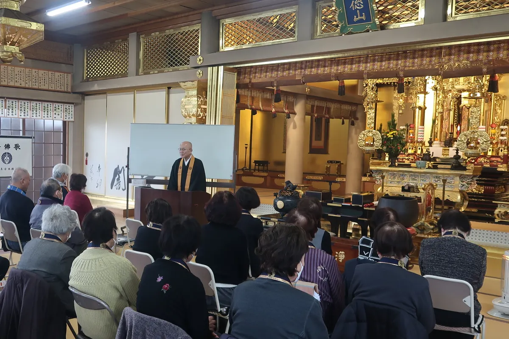
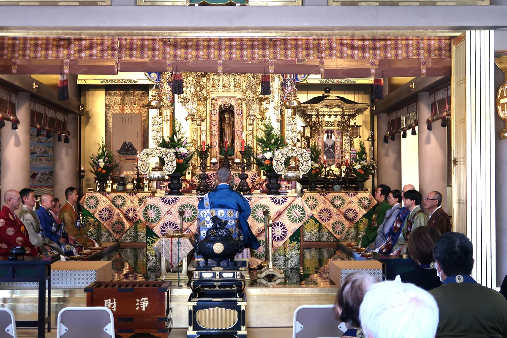

初法座
1月3日 ｜ 2階本堂
新しい年のはじめに、み教えを聞かせていただく法座です。
法要・法座
浄土真宗のみ教えを聞きひらいてきたお寺です。

恵光寺は、蓮如上人のご縁にはじまり、550年にわたって浄土真宗のみ教えを大切にしてきたお寺です。
浄土真宗では、み教えを「聞く」ことを何より大切にします。恵光寺では一年を通して法要と法座をお勤めし、み教えをきちんと理解されたご講師をお招きして、ご法話をいただいています。どなたでもお参りいただけます。
写真を押すと、お名前が出ます。